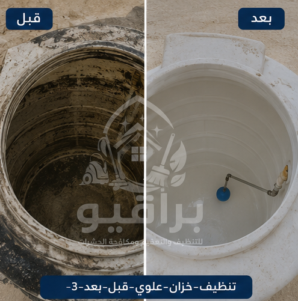
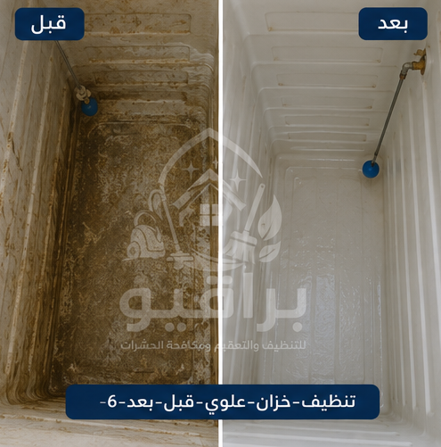
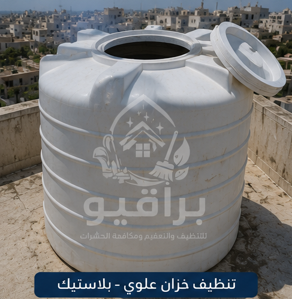
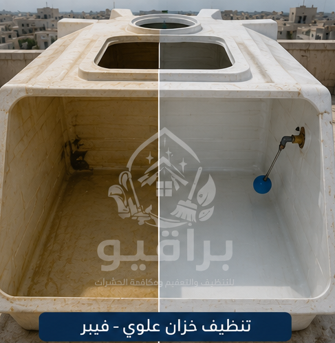
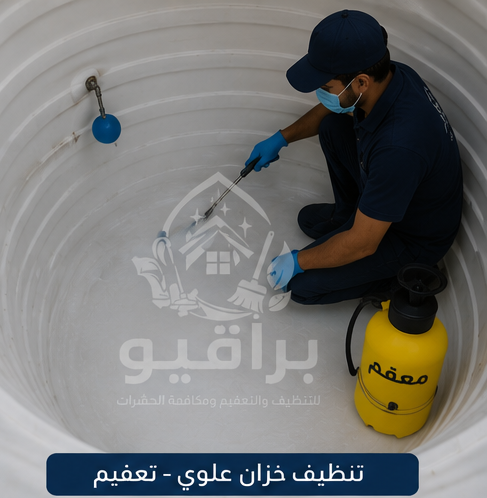
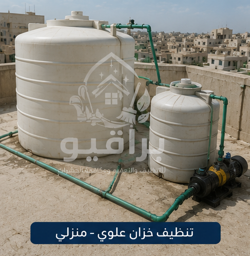
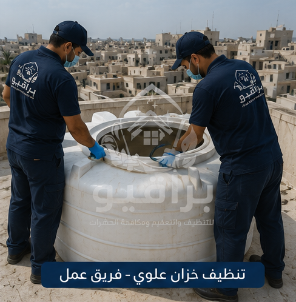
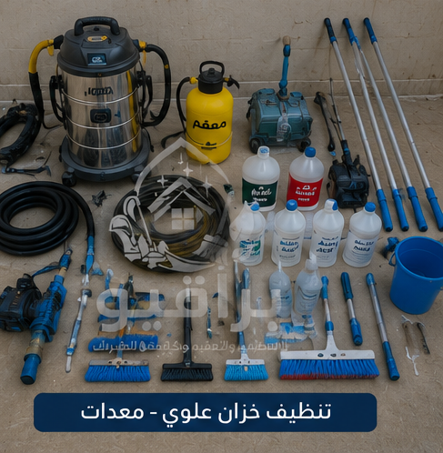

مقدمة
تُعد الخزانات العلوية جزءًا أساسيًا من منظومة المياه في المنازل والفلل والعمائر والأبراج والمنشآت التجارية بمدينة الرياض، فهي المسؤولة عن تخزين المياه التي تُستخدم يوميًا في الشرب والطهي والاستحمام والتنظيف. ولهذا فإن المحافظة على نظافة الخزان العلوي جزء مهم من أعمال الصيانة الدورية للعقار.
لماذا يعتبر تنظيف الخزانات العلوية مهمًا؟
مع مرور الوقت قد تتجمع داخل الخزان رواسب ناتجة عن الاستخدام أو عن الشوائب التي قد تصل مع المياه. ومن أهم فوائد تنظيف الخزانات العلوية: إزالة الرواسب المتراكمة، تنظيف جدران الخزان، تنظيف أرضية الخزان، تنظيف الغطاء، تنظيف فتحات التهوية، المحافظة على نظافة الخزان، المساعدة في الحفاظ على مكونات الخزان.

قبل وبعد التنظيف

قبل وبعد التنظيف

قبل وبعد التنظيف

قبل وبعد التنظيف

قبل وبعد التنظيف

قبل وبعد التنظيف

تنظيف الخزانات البلاستيك

تنظيف خزانات الفيبر

تعقيم الخزانات

تنظيف الخزانات المنزلية

فريق العمل

المعدات
خدمات تنظيف الخزانات العلوية بالرياض
- تنظيف الخزانات العلوية.
- غسيل الخزانات العلوية.
- تعقيم الخزانات العلوية.
- تنظيف خزانات مياه الشرب.
- تنظيف خزانات المنازل.
- تنظيف خزانات الفلل.
- تنظيف خزانات العمائر.
- تنظيف خزانات الأبراج.
- تنظيف خزانات الشركات.
- تنظيف خزانات المدارس.
- تنظيف خزانات المستشفيات.
- تنظيف خزانات المساجد.
- تنظيف خزانات الفنادق.
- إزالة الرواسب.
- تنظيف أغطية الخزانات.
- تنظيف فتحات التهوية.
💧 خزانك محتاج تنظيف؟
📱 احجز موعد الآنأنواع الخزانات العلوية التي نقوم بتنظيفها
- خزانات الفيبر جلاس.
- خزانات البولي إيثيلين.
- خزانات الستانلس ستيل.
- الخزانات الخرسانية العلوية.
- الخزانات البلاستيكية.
- الخزانات المنزلية.
- الخزانات التجارية.
متى يحتاج الخزان العلوي إلى التنظيف؟
- مرور فترة طويلة منذ آخر تنظيف.
- وجود رواسب في قاع الخزان.
- تراكم الأتربة على الغطاء أو حول فتحات التهوية.
- ملاحظة تراكم ترسبات على الجدران الداخلية عند الفحص.
- إجراء صيانة دورية للمبنى تستلزم تنظيف الخزان.
خطوات تنظيف الخزانات العلوية بالرياض
1. فحص الخزان: يتم فحص حالة الخزان من الداخل والخارج، والتأكد من سلامة الغطاء وفتحات التهوية.
2. تفريغ الخزان: يتم تفريغ المياه المتبقية بطريقة مناسبة قبل بدء عملية التنظيف.
3. إزالة الرواسب: تُزال الرواسب والأتربة والشوائب المتراكمة في أرضية الخزان وعلى الجدران الداخلية.
4. تنظيف الجدران والأرضية: يتم تنظيف جميع الأسطح الداخلية للخزان باستخدام الأدوات والمواد المناسبة.
5. تنظيف الغطاء وفتحات التهوية: يشمل ذلك إزالة الأتربة وتنظيف الأجزاء التي تساعد على حماية الخزان.
6. تعقيم الخزان عند طلب الخدمة: يمكن تنفيذ خدمة تعقيم الخزانات العلوية باستخدام مواد مخصصة ومعتمدة.
خدمات تنظيف الخزانات في جميع أحياء الرياض
تقدم براقيو خدمات تنظيف الخزانات العلوية بالرياض في جميع أحياء مدينة الرياض: حي النرجس، حي الياسمين، حي الملقا، حي العارض، حي حطين، حي الصحافة، حي الربيع، حي الغدير، حي التعاون، حي المروج، حي العليا، حي السليمانية، حي الملك فهد، حي قرطبة، حي المونسية، حي الرمال، حي القادسية، حي اليرموك، حي الروضة، حي الخليج، حي النسيم، حي الشفا، حي السويدي، حي العزيزية، حي بدر، حي ظهرة لبن، حي الدار البيضاء.
الأسئلة الشائعة
كم مرة يجب تنظيف الخزان العلوي؟
يُنصح بإجراء تنظيف دوري وفق طبيعة الاستخدام، مع فحص الخزان بصورة منتظمة للتأكد من نظافته.
هل تشمل الخدمة تعقيم الخزان؟
نعم، يمكن تنفيذ خدمة تنظيف وتعقيم الخزان العلوي عند طلب العميل باستخدام مواد مناسبة.
هل يتم تنظيف جميع أنواع الخزانات؟
نعم، تشمل الخدمة خزانات الفيبر جلاس، والبولي إيثيلين، والستانلس ستيل، والخزانات الخرسانية العلوية.
فريق عمل مدرب
عمالة محترفة ومدربة على أعلى مستوى
مواد آمنة
مواد تنظيف وتعقيم مخصصة لخزانات المياه
سرعة في الإنجاز
خدمة سريعة مع الالتزام بالمواعيد
ضمان الجودة
نتائج احترافية وجودة في التنفيذ
براقيو أفضل شركة تنظيف الخزانات العلوية بالرياض
إذا كنت تبحث عن أفضل شركة تنظيف الخزانات العلوية بالرياض، فإن براقيو تقدم خدمات احترافية تناسب جميع أنواع الخزانات العلوية في المنازل والفلل والعمائر والأبراج والمنشآت التجارية. نعتمد على فريق متخصص يمتلك الخبرة في تنظيف خزانات المياه العلوية بمختلف أحجامها وأنواعها.
خاتمة
يُعد تنظيف الخزانات العلوية بالرياض من أهم أعمال الصيانة الدورية التي تساعد على المحافظة على الخزان ونظام توزيع المياه داخل المبنى. ومع الاهتمام بالتنظيف المنتظم، وفحص الخزان، وإزالة الرواسب، وتنفيذ التعقيم عند الحاجة، يمكن الحفاظ على الخزان بحالة جيدة وإطالة عمره الافتراضي. في براقيو نقدم خدمات تنظيف وغسيل وتعقيم الخزانات العلوية في جميع أحياء مدينة الرياض.
نقدم خدمة تنظيف المكيفات في جميع أحياء الرياض: حي النرجس، حي الياسمين، حي الملقا، حي العارض، حي حطين، حي الصحافة، حي الربيع، حي الغدير، حي العقيق، حي المروج، حي الورود، حي النفل، حي الندى، حي الفلاح، حي التعاون، حي الازدهار، حي قرطبة، حي الرمال، حي المونسية، حي القادسية، حي اليرموك، حي الخليج، حي الروضة، حي إشبيلية، حي الجزيرة، حي النهضة، حي الحمراء، حي غرناطة، حي الريان، حي الربوة، حي القدس، حي الروابي، حي السويدي، حي ظهرة لبن، حي لبن، حي طويق، حي العريجاء، حي البديعة، حي شبرا، حي سلطانة، حي الشفا، حي بدر، حي العزيزية، حي الدار البيضاء، حي المنصور، حي الحزم، حي نمار، حي أحد، حي عكاظ، حي المروة، حي العليا، حي السليمانية، حي الملز، حي الفوطة، حي المربع، حي البطحاء، حي الديرة، حي السفارات.